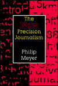

The New |
| Preface
The original Precision Journalism was written in the 1969-1970 academic year while I was the happy guest of the Russell Sage Foundation in New York City. It was updated only once, in 1978. The principles of social science research have not changed very much since then, but the technology has. And so this book is an attempt at a new start. It has a new title because 90 percent of the material is new. Only one chapter, the present chapter 6, has been retained in anything like the original form. A number of the original anecdotes and examples have been preserved, but the overall approach has been made kinder, gentler, and, I hope, more logical, informed by sixteen semesters of teaching this material to journalism students. The concept of precision journalism is, as often happens in social science, much older than the term itself. For a long time, those of us working with the concept struggled over what to call it. My involvement began in 1966-1967 when I used my Nieman year at Harvard University to study social science research methods. In the summer of 1967, I applied those methods to coverage of the Detroit riot for the Detroit Free Press. The Russell Sage grant followed. It was to produce a manuscript with the working title "The Application of Social and Behavioral Science Research Methods to the Practice of Journalism." A proper title had still not been found when the manuscript saw its first classroom use: Ted Frederickson and Herbert Strentz produced photocopies with my blessing for students at the University of North Dakota. In the winter of 1971, Everette E. Dennis took a leave from Kansas State University to teach a seminar on "The New Journalism" at the University of Oregon. He included what I had done in Detroit as an example of one rather exotic species of new journalism, and he called it "precision journalism" to contrast its scientific method with the artsy approach of those like Tom Wolfe and Jimmy Breslin who used short-story techniques to illuminate nonfiction. I first heard the term at K-State from Dennis himself while we were strolling from the old part of Kedzie Hall to the new. Its earliest uses in print that I know about date from 1971. Neil Felgenhauer wrote a chapter on precision journalism in The Magic Writing Machine, a book produced by Dennis's seminar and published by the University of Oregon School of Journalism. In that same year, Michael L. Johnson used the term in The New Journalism, published by the University Press of Kansas, in a footnote to describe the work of Ben Wattenburg. In 1972, when John Gallman of Indiana University Press broke my string of rejections and accepted the manuscript for publication, we decided that Dennis's descriptive term had the right ring, and so we adopted it. The choice proved to be correct. In the information age, an idea that won't fit in a sound bite or on a bumper sticker has a poor chance of survival. The current volume was made possible by the University of North Carolina at Chapel Hill and the William Rand Kenan Jr. Professorship, which provided the funding for a leave of absence. Consulting assignments with USA Today and CBS News gave me the opportunity to test the ideas on real journalists. Portions of the manuscript were commented on by Carol Knopes, Shawn McIntosh, Jim Norman, Larry Sanders, Julia D. Wallace, G. Cleveland Wilhoit, and Frances Wilhoit. Gordon Black, Robert Hurd, Kathy Frankovic, and Warren Mitofsky helped me stay current on the art and science of election polling. The founders of the Carolina Poll, Richard Cole, Robert L. Stevenson, and Jane Brown, welcomed me into their midst in 1981 and kept my skills from getting rusty. Robert R. Berry, Pama, Mitchell and Timothy Rogers were energetic research assistants. Errors are, of course, my own, and if I didn't get it right this time, I'll try again. |
Download Preface in Word
|